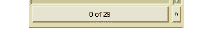

To use a list filter
1 Click the Filter List button of the column or list that you want to filter.

The Filter List dialog box appears. When you invoke the Filter List dialog box, the default Generic filter is in effect. If you select a different filter, it remains in effect until you again select a different filter or quit DIScover.
2 Specify filter properties as desired.
3 Click OK.
The filtered list appears for viewing.
While a filter is in effect, the list’s background color changes, and the numbering at the bottom of the column or list changes from n of m to n of p from m. This translates as “n items selected from a subset of p items filtered from a total of m items.” For example, a label of 0 of 42 from 216 means that there are no items currently selected, there are 42 items displayed as a result of the current list filter, and there are 216 items in the complete list.
You can repeat steps 1 through 3 as often as desired. The list filter always applies to the entire list, not just to the currently displayed items.
4 Click the reset (R) button to remove the current list filter.